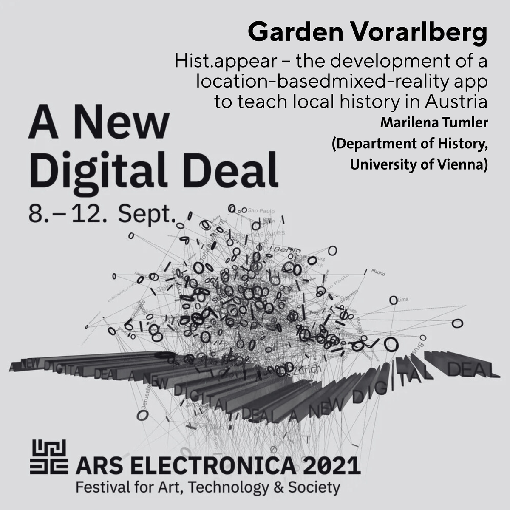

Vom 8. bis 12. September 2021 fand das Ars Electronica Festival unter dem Motto “A New Digital Deal” statt. Als nomadisches Programm erstreckte es sich über zahlreiche Standorte weltweit – darunter die Region Arlberg-Bodensee in Vorarlberg.
Garden Vorarlberg
Der Garden Vorarlberg war eines der Satelliten-Events des Ars Electronica Festivals. In Kooperation mit der FH Vorarlberg und Ars Electronica wurden an verschiedenen Orten in Vorarlberg Projekte an der Schnittstelle von Kunst, Technologie und Gesellschaft präsentiert.
hist.appear im vorarlberg museum
Im Rahmen eines Symposiums im vorarlberg museum wurde hist.appear als Plattform für interaktive Stadtrundgänge und Mixed-Reality-Erlebnisse vorgestellt. Die Präsentation zeigte, wie digitale Technologien eingesetzt werden können, um Geschichte und Kultur erlebbar zu machen.
Das Festival brachte Künstler:innen, Wissenschaftler:innen und Technolog:innen zusammen, um über die digitale Zukunft zu diskutieren. hist.appear fügte sich mit seinem Ansatz – Mixed Reality im Dienst von Bildung und Kultur – nahtlos in das Festival-Thema ein.